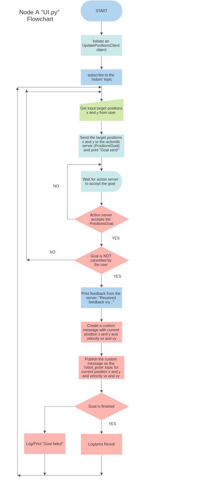

Robot Simulation using Python and ROS
This project is the second assignment for Research Track 1. It is a simulation of a motion planning of a mobile robot in an environment. The project was intially forked from the following directory and using the following command:
git clone https://github.com/CarmineD8/assignment_2_2022.git
Initially, the robot was controlled using the information in its environment. The necessary nodes were implement to allow the robot to follow/drive towards a set position (target x and y), avoid and follow obstacles (“bug0 algorithm) to finally reacht the target positions x and y. New functionalities are added to allow the user choose and enter where he wants the robot to drive to. As the robot drives towards the user’s goal, the current position x and y as well as the the linear velocities are published on a custom message. A seperate service node prints the number of goals reached and cancelled. Another functionality is the implementation of a new node that subscribes to the robot’s position and velocity and then prints the distance of the robot from the target and the robot’s average speed. Further details are provided later in this readme file.
Installing and running
Follow these instructions to correctly install and run this project
Dependencies
This project was only tested and run on ROS NOETIC. For other versions of ROS, it is unsure if it will work perfectly. It will most likely present errors. Please feel to try and let me know. To install ros NOETIC on Ubuntu, follow the instructions here. To successfully run this project, you also need to have Gazebo and Rviz installed in your computer. Click on these links to install Gazebo and Rviz. To download the code, you can either directly download from github or you can use the following command line:
https://github.com/Fritta013/Research-Track-1-Assignment-2.git
Running from shell
Once you have your catkin workspace all set up, you can go ahead and download this directory inside your src folder. You can also download this directory using the git clone command. Once this is done, it is essential to run catkin_make at the root of your catkin workspace. Another important step before launching this project, is to source /catkin_ws/devel/setup.bash by running the following command:
source ~/catkin_ws/devel/setup.bash
Assuming the previous steps were completed successfuly, you can now navigate to assignment_2_2022 and run the project using the following command line:
roslaunch assignment_2_2022 assignment1.launch
Understanding the Functionalities and structure of the project
The structure of the assignment_2_2022 package is organized as such:
├── assignment_2_2022
│ ├── config; which serves as configuration files for simulation
│ ├── sim.rviz
│ ├── sim2.rvis
│ ├── launch: which serves as roslaunch files
│ ├── assignment1.launch
│ ├── sim_w1.launch
│ ├── urdf: which serves as robot description files
│ ├── robot2_laser.gazebo
│ ├── robot2_laser.xacro
│ ├── urdf: which serves as robot description files
│ ├── robot2_laser.gazebo
│ ├── robot2_laser.xacro
│ ├── urdf: which serves as robot description files
│ ├── robot2_laser.gazebo
│ ├── robot2_laser.xacro
│ ├── worlds: which servers as environment for simulation
│ ├── assignment.world
│ ├── action: which serves as action file
│ ├── Positions.action
│ ├── msg: for the custom messages
│ ├── RobotPose.msg
│ ├── srv: for the ros services
│ ├── check_status.srv
│ ├── scripts: ros node to fulfill the functionalities and requirements of this project
│ ├── UI.py
│ ├── check_status.py
│ ├── check_pos_vel.py
│ ├── bug_as.py
│ ├── go_to_point_service.py
│ ├── wall_follow_service.py
│ ├── CmakeLists.txt: for building software packages
│ ├── package.xml: to define properties about the package
└──
Project Breakdown
Launch file
This launch file starts several ROS nodes in the package /assignment_2_2022 and launch a simulation environment. The launch file starts the following nodes:
wall_follower: wall_follow_service.py ROS node
go_to_point: go_to_point_service.py ROS node
bug_action_service: bug_as.py ROS node
user_interface: UI.py ROS node
check_status: check_status.py ROS node
check_position_velocity: check_pos_vel.py ROS node
Additionally, the node check_position_velocity takes an additional parameter named rate_input with the value of 10. It is to be notedd that the different nodes communicate with each other to perform their tasks.
The UI node
This ROS node is an action client that allows a user to send a target position goal to an action server using the PositionsAction message (PositionsGoal). The node subscribes to the /odom topic to get the current linear velocity of the robot, and then publishes the linear velocity, vx and vy of the robot on the robot_pose topic. The node gets the current position x and y of the robot from the feedback_callback method in UpdatePositionsClient class. Then, it publishes the current position, x and y, and linear velocity, vx and vy of the robot on the custom message and under the topic ‘robot_pose’. The final result is also obtained from the get_result_callback method in the same class. It declares whether the gaol is finished successfully or if it failed.
Below is the flowchart for the node: UI.py

The check_status node
This ROS node is a service node that subscribes to the topic /reaching_goal/status and when requested listens for updates on the status of goals. The node is able to access the status of the goal through GoalStatus where each every GoalStatusArray presents a specific state as demonstrated in the lines of code below:
if goal_status.status == GoalStatus.ACTIVE:
rospy.loginfo("Goal is active")
elif goal_status.status == GoalStatus.SUCCEEDED:
rospy.loginfo("Goal succeeded")
counter_success+=1
print('number of goals success is %s', str(counter_success))
elif goal_status.status == GoalStatus.ABORTED:
rospy.loginfo("Goal aborted")
elif goal_status.status == GoalStatus.PREEMPTED:
rospy.loginfo("Goal preempted")
counter_cancelled+=1
print('number of goals cancelled is %s', str(counter_cancelled))
elif goal_status.status == GoalStatus.REJECTED:
rospy.loginfo("Goal rejected")
elif goal_status.status == GoalStatus.RECALLED:
rospy.loginfo("Goal recalled")
The node also counts the number of goals that have been successfully reached and the number of goals that have been cancelled. It then provides a service named “check_status” which when requested, returns the number of successful and cancelled goals.
The check_pos_vel node
This node subscribes to the robot’s position and velocity, using the custom message from the UI.py node, and prints the distance of the robot from the target and the robot’s average speed. It subscribes to two topics: “robot_pose” and “reaching_goal”. The “robot_pose” topic is used to get the current position of the robot, x and y, and the “reaching_goal” topic is used to get the target position of the robot, previously set by the user. The node also calculates the distance between the current position and the target position and prints the distance to the console. It is possible to set at how fast the node publishes the information.
Future Improvement
This project can be improved in many possible ways, below are some points that could be fixed to make the code more efficient:
In node
UI.py, the case where the goal fails is not handled well. Some lines of code should be added so that when the PositionsGoal (or PositionsRequest) fails, more information should be provided to report back to the user why the Goal failed.Allow the user to increase to decrease the linear speed of the robot
Allow the user to change his target positions x and y throughout the course after having selected his initial target positions instead of having to cancelling them.
Report back or retrieve more information from the robot’s sensors to better track the robot’s progress and motion planning. These information could be published in log files or custom messages.